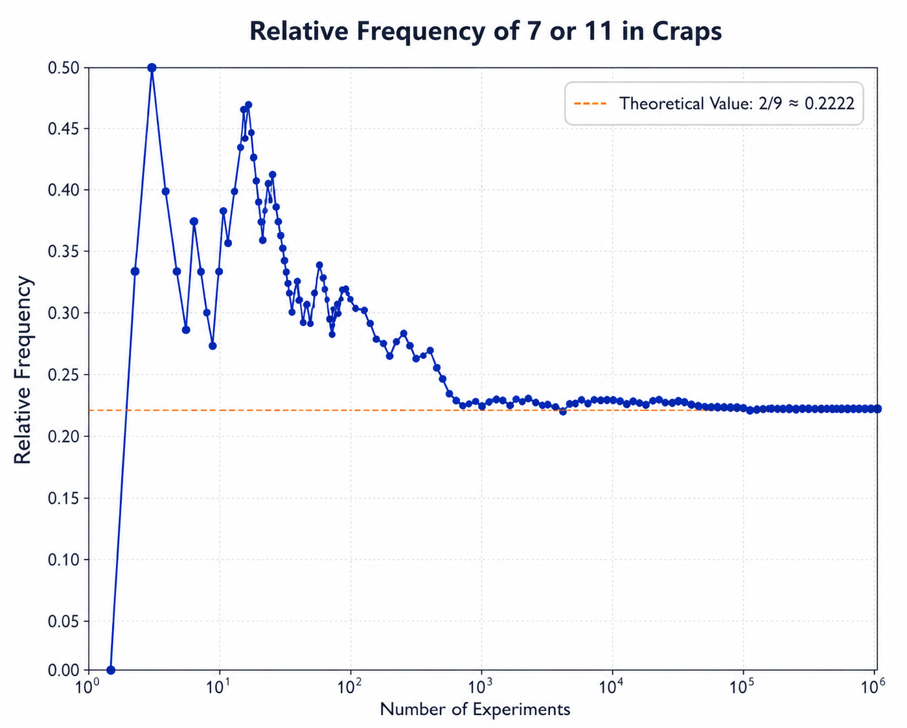

1 확률
- 확률 모형: 세 가지 구성 요소는 (a) 표본공간, (b) 사건, (c) 사건의 확률이다.
1.1 표본공간과 사건
실험(우연 실험이며, 반드시 설계된 실험일 필요는 없음): 결과가 불확실한 과정이다.
표본공간: \(\Omega\)는 실험에서 가능한 모든 결과를 포함하는 집합이다. 경우에 따라 \(\Omega\)에는 실제로는 불가능한 결과가 포함될 수도 있다.
- 표본공간에 포함된 결과의 수는 유한할 수도 있고 무한할 수도 있다.
- 무한 표본공간은 가산일 수도 있고 비가산일 수도 있다. 표본공간의 결과들을 정수 \(1, 2, \ldots\)와 대응시킬 수 있으면 그 표본공간은 가산이다.
- 표본공간에 포함된 결과의 수는 유한할 수도 있고 무한할 수도 있다.
사건: 표본공간의 부분집합이다.
- 단순 사건은 하나의 결과만 포함한다. 단순 사건은 \(\omega\)로 나타낸다.
- 복합 사건은 두 개 이상의 결과를 포함한다. 복합 사건은 대문자로 나타낸다.
1.2 사건의 대수
- 관계와 정의
- 포함: \(E \subset F\)는 \(\omega \in E \Rightarrow \omega \in F\)를 의미하며, 여기서 \(\omega\)는 \(\Omega\)의 결과이다.
- 같음: \(E = F\)는 \(E \subset F\)이고 동시에 \(F \subset E\)임을 의미한다.
- 여사건: \(E^c\)는 집합 \(\{\omega \in \Omega, \omega \ \notin \ E\}\)이다.
- 참고: 여기서는 표기 \(E \subseteq F\)를 사용하지 않는다. 따라서 \(E \subset F\)라고 할 때 \(E = F\)일 수도 있고 \(E \ne F\)일 수도 있다.
- 벤 다이어그램은 집합을 나타내는 데 사용할 수 있다.
- 공집합: \(\emptyset\)은 공집합, 즉 원소가 없는 집합이다. \(\Omega^c = \emptyset\)이고 \(\emptyset^c = \Omega\)임에 유의하라.
- 포함: \(E \subset F\)는 \(\omega \in E \Rightarrow \omega \in F\)를 의미하며, 여기서 \(\omega\)는 \(\Omega\)의 결과이다.
- 집합 연산
- 합집합: \(A \cup B\)는 \(A\) 또는 \(B\)에 속하는 모든 결과의 집합이다.
- 교집합: \(AB\)는 \(A\)에도 속하고 \(B\)에도 속하는 모든 결과의 집합이다. 나는 집합의 교집합을 나타낼 때 \(A \cap B\)라는 표기를 선호한다.
- 서로소: \(A\)와 \(B\)가 서로소(상호 배타적)라는 것은 \(A \cap B\)가 공집합이라는 뜻이다. 즉, \(A \cap B = \emptyset\)이다.
- 교환법칙: \(A \cup B = B \cup A\)이고 \(A \cap B = B \cap A\)이다.
- 결합법칙: \((A \cup B) \cup C = A \cup (B \cup C)\)이고 \((A \cap B) \cap C = A \cap (B \cap C)\)이다.
- 분배법칙: \(A \cap (B \cup C) = (A \cap B) \cup (A \cap C)\)이고 \(A \cup (B \cap C) = (A \cup B) \cap (A \cup C)\)이다.
- 드모르간 법칙:
- 합집합: \(A \cup B\)는 \(A\) 또는 \(B\)에 속하는 모든 결과의 집합이다.
\[\Bigg( \displaystyle\bigcup_{i=1}^{k}A_i \Bigg)^c \subset \displaystyle\bigcap_{i=1}^k A_i^c\]
- 증명: 다음 두 포함관계를 보이면 된다.
\[\Bigg(\displaystyle\bigcup_{i=1}^{k}A_i \Bigg)^c \subset \displaystyle\bigcap_{i=1}^k A_i^c \,\,\, and \,\,\, that \,\,\, \displaystyle\bigcap_{i=1}^k A_i^c \subset \Bigg(\displaystyle\bigcup_{i=1}^{k}A_i \Bigg)^c\]
- 1단계: \(\omega\)를 \(\Omega\)의 한 결과라고 하자. 그러면
\[\omega \in \Bigg( \displaystyle\bigcup_{i=1}^{k}A_i \Bigg)^C \Rightarrow \omega \notin \displaystyle\bigcup_{i=1}^{k}A_i\]
\(\Rightarrow \omega \notin A_i\) for each \(i = 1, \dots , k \Rightarrow \omega \in A_i^c\) for each \(i = 1, \dots , k\)
\[\Rightarrow \omega \in \displaystyle\bigcap_{i=1}^k A_i^c \Rightarrow \Bigg( \displaystyle\bigcup_{i=1}^{k}A_i \Bigg)^c \subset \displaystyle\bigcap_{i=1}^k A_i^c.\]
- 2단계: \(\omega\)를 \(\Omega\)의 한 결과라고 하자. 그러면
\[ \omega \in \displaystyle\bigcap_{i=1}^k A_i^c \Rightarrow \omega \in A_i^c \ \textrm{for each} \ i = 1, \dots, k \]
\[ \begin{align} &\Rightarrow \omega \notin A_i \ \textrm{for each} \ i = 1, \dots, k \Rightarrow \omega \notin \displaystyle\bigcup_{i=1}^{k}A_i \\ &\Rightarrow \omega \in \Bigg( \displaystyle\bigcup_{i=1}^{k}A_i \Bigg)^c\\ &\Rightarrow \displaystyle\bigcap_{i=1}^k A_i^c \subset \Bigg( \displaystyle\bigcup_{i=1}^{k}A_i \Bigg)^c \end{align} \]
1.3 대칭성이 있는 실험
- 동등하게 일어날 가능성이 있는 결과
- 유한 표본공간 \(\Omega = \{\omega_1, \dots, \omega_N \}\)의 결과들이 모두 동등하게 가능하다면, 각 결과의 확률은 \(1/N\)이다. 즉, \(i = 1, \dots, N\)에 대해 \(P(\omega_i) = 1/N\)이다.
- 정의: \(N\)개의 객체로 이루어진 유한 모집단에서 하나의 객체를 무작위로 뽑으면, 각 객체가 선택될 가능성은 동일하다.
- 사건 \(E\)가 \(N\)개의 동등하게 가능한 결과를 가진 표본공간에서 \(k\)개의 결과로 이루어진 부분집합이면, \(P(E) = k/N\)이다.
- 정의: 오즈
- 유한 표본공간 \(\Omega = \{\omega_1, \dots, \omega_N \}\)의 결과들이 모두 동등하게 가능하다면, 각 결과의 확률은 \(1/N\)이다. 즉, \(i = 1, \dots, N\)에 대해 \(P(\omega_i) = 1/N\)이다.
i. 사건 \(E\)의 확률이 \(P(E)\)이고 사건 \(F\)의 확률이 \(P(F)\)이면,
\[ Odds \,\,\, of \,\,\, E \,\,\, to \,\,\, F \overset{def}= \frac{P(E)}{P(F)}, \]
단, \(P(F) > 0\)이어야 한다. - 오즈는 확률이 아니라 확률의 비율임에 유의하라.
ⅱ. 단일 사건 \(E\)의 오즈는 \(E\) 대 \(E^c\)의 오즈로 정의한다. 즉,
\[ Odds \,\,\, of \,\,\, E \overset{def}= \frac{P(E)}{P(E)^c} = \frac{P(E)}{1-P(E)}, \]
단, \(P(E) < 1\)이어야 한다.
확률의 공리
- 임의의 사건 \(A\)에 대해 \(0 \leq \Pr(A) \leq 1\)이다.
- \(\Pr(\Omega) = 1\)이다.
- 가법성: \(A_1\)과 \(A_2\)가 서로소 사건이면 \(P(A_1 \cup A_2) = P(A_1) + P(A_2)\)이다.
- 확률의 상대도수 해석:
- 사건의 상대도수는 실험을 독립적이고 동일하게 \(n\)번 반복했을 때 그 사건이 발생한 비율이다.
- 사건의 확률은 \(n \rightarrow \infty\)일 때 그 사건의 상대도수의 극한이다.
- 구체적으로, \(E\)를 사건이라 하고 \(f_n(E)\)를 실험을 독립적이고 동일하게 \(n\)번 반복했을 때 \(E\)가 발생한 횟수라고 하자. 그러면
\[ \Pr(E) = \displaystyle\lim_{n \rightarrow \infty} \frac{f_n(E)}{n}.\]
- 예: 크랩스 게임.
- 주사위 한 쌍, 즉 두 개의 주사위를 굴린다.
- 두 주사위 눈의 합이 7 또는 11이면 플레이어가 이기고 게임은 끝난다.
- 두 주사위 눈의 합이 2, 3 또는 12이면 플레이어가 지고 게임은 끝난다.
- 두 주사위 눈의 합이 그 밖의 값이면 그 합을 “포인트”라고 하며 게임은 계속된다.
- 이 경우 플레이어는 합이 7이 나오거나 포인트와 같은 값이 나올 때까지 주사위 한 쌍을 반복해서 굴린다.
- 7이 먼저 나오면 플레이어가 진다.
- 포인트가 먼저 나오면 플레이어가 이긴다.
- 다음 페이지에는 첫 번째 굴림에서 7 또는 11이 나오는 상대도수의 그래프가 제시되어 있다.
- 이 그래프를 만들기 위해 주사위 한 쌍을 1,000,000번 굴렸다.
- 이 모든 시행 중 7 또는 11이 222,531번 나왔다.
- 주사위가 공정하다면, 즉 한 눈, 두 눈, …, 여섯 눈이 동등하게 가능하다면 다음을 보일 수 있다.
\[ \Pr\textrm{(7 or 11 on first roll)} = \frac{8}{36} = 0.22222.... \]

1.4 실험의 구성: 계수 규칙
- 표본공간이 가산일 때 확률 계산: \(\Omega = \{\omega_1, \omega_2, \dots \}\)이고, 여기서 \(\omega_i\)는 단순 사건, 즉 하나의 결과라고 하자. \(A\)가 복합 사건이라고 하자.
- 일반 공식: 가법성, 즉 공리 iii로부터 다음이 성립한다.
\[ \Pr(A) = \displaystyle\sum_{\omega_i \in A} \Pr(\omega_i). \]
- 특수한 경우: 대칭성.
- \(\Omega\)가 \(N\)개의 결과를 포함하고 그 결과들이 모두 동등하게 가능하다고 하자.
- 이 상황은 실험이 \(\Omega\)에서 하나의 결과를 무작위로 선택하는 것으로 이루어질 때 발생한다.
- 사건 \(A\)가 \(\Omega\)의 \(N\)개 결과 중 \(k\)개로 이루어져 있으면 \(\Pr(A) = k/N\)이다.
- 계수 규칙: 결과들이 동등하게 가능할 때 확률을 계산하는 데 유용한 규칙들이다.
- 곱셈 규칙.
- 합성 실험 \(\varepsilon\)은 부분 실험 \(\varepsilon_1, \dots, \varepsilon_k\)를 차례로 또는 동시에 수행하는 순서열이다.
- 부분 실험 \(\varepsilon_i\)의 표본공간을 \(\Omega_i\)라고 하고, \(\Omega_i\)에 있는 결과의 수를 \(n_i\)라고 하자.
- 그러면 \(\Omega\)에 있는 결과의 수는 다음과 같다.
\[ N = \displaystyle\prod_{i=1}^k n_i \]
\(N\)이 너무 크지 않으면 \(N\)개의 결과를 나무그림으로 나타낼 수 있다.
\(\Omega_1\)의 \(n_1\)개 결과가 동등하게 가능하고, \(\Omega_2\)의 \(n_2\)개 결과가 동등하게 가능하며, …, \(\Omega_k\)의 \(n_k\)개 결과가 동등하게 가능하면, 가능한 \(N\)개의 결과도 동등하게 가능하다.
순열 규칙.
- 순열은 \(N > n\)개의 서로 다른 항목에서 \(n\)개를 뽑아 만든 순서가 있는 배열이다. 순열의 수는 다음과 같다.
\[ (N)_n = N(N-1)(N-2) \cdots (N-n+1) = \frac{N!}{(N-n)!}. \]
결과: 서로 다른 \(N\)개의 항목으로 이루어진 모집단에서 \(n\)개의 항목을 하나씩 무작위로 비복원 추출하면, 가능한 \((N)_n\)개의 표본 순서열은 모두 동등하게 가능하다.
서로 구별되지 않는 항목들의 서로 다른 순서열. \(N\)개의 항목으로 이루어진 집합에서 \(m_1\)개는 유형 1, \(m_2\)개는 유형 2, …, \(m_k\)개는 유형 \(k\)라고 하고, \(\sum_{j=1}^{k}m_j = N\)이라고 하자.
- 그러면 \(N\)개 항목의 서로 다른 순서열의 수는 다음과 같다.
\[ \binom{N}{m_1, m_2, \dots, m_k} = \frac{N!}{\prod_{j=1}^{k}m_j!} \]
- 특수한 경우: \(k\) = 2. 이 경우 \(N = m_1 + m_2\)이고, 표기는 보통 다음처럼 단순화된다.
\[ \binom{N}{m_1, m_2} \ \textrm{to} \ \binom{N}{m_1} \ \textrm{or} \ \binom{N}{m_2} \]
- 어떤 표기를 사용하든 식은 동일하다.
\[ \binom{N}{m_1} = \binom{N}{m_2} = \frac{N!}{m_1!(N-m_1)!} = \frac{N!}{m_2!(N-m_2)!} = \frac{N!}{m_1!m_2!} \]
- 조합 규칙. 서로 다른 \(N \ge n\)개의 항목에서 비복원으로 뽑은 순서 없는 \(n\)개 항목의 부분집합을 조합이라고 한다. 서로 다른 \(N\)개 항목에서 크기 \(n\)의 조합 수는 다음과 같다.
\[ \binom{N}{n} = \frac{N!}{n!(N-n)!} \]
- 결과: 서로 다른 \(N\)개의 항목으로 이루어진 모집단에서 \(n\)개의 항목을 하나씩 무작위로 비복원 추출하면, 가능한 \(\binom{N}{n}\)개의 조합은 모두 동등하게 가능하다.
예
- 포커에서 5장 스트레이트.
- 표준 52장 카드 덱에서 5장의 카드를 무작위로 받는다.
- 스트레이트는 연속된 순서의 카드 5장이다.
- 카드의 무늬는 관련이 없다.
- 에이스는 높게도 낮게도 사용할 수 있다.
- 따라서 스트레이트의 유형은 10가지이다(5 하이부터 에이스 하이까지).
- 각 스트레이트는 \(4^5\)가지 방식으로 발생할 수 있다. 따라서
\[ \Pr(\textrm{straight}) = \frac{10×4^5}{\binom{52}{5}} = \frac{10,240}{2,598,960} = 0.00394 \approx \frac{1}{254}. \]
- 포커에서 풀하우스.
- 표준 52장 카드 덱에서 5장의 카드를 무작위로 받는다.
- 풀하우스는 같은 숫자 3장과 다른 같은 숫자 2장으로 이루어진다.
- 계급, 즉 에이스, 2, …, 킹 중 하나를 선택하는 방법은 \(\binom{13}{1}\) = 13가지이다.
- 하나의 계급이 주어졌을 때, 네 장 중 세 장을 선택하는 방법은 \(\binom{4}{3}\) = 4가지이다.
- 두 번째 계급을 선택하는 방법은 \(\binom{12}{1}\) = 12가지이고, 네 장 중 두 장을 선택하는 방법은 \(\binom{4}{2}\) = 6가지이다. 따라서
\[ \Pr(\textrm{full house}) = \frac{\binom{13}{1}\binom{4}{3}\binom{12}{1}\binom{4}{2}}{\binom{52}{5}} = \frac{3,744}{2,598,960} \approx 0.00144. \]
- 생일 문제.
- 생일이 365일에 균등하게 분포한다고 가정하자(이는 완전히 사실은 아니다). 즉, 한 사람을 무작위로 선택하면 그 사람의 생일이 특정 날짜, 예를 들어 10월 28일일 확률이 1/365라고 가정한다.
- \(k\)명의 표본이 주어졌을 때, 두 명 이상이 같은 생일을 가질 확률을 구하라.
- 해: \(k ≤ 365\)이면
\[ \begin{align} \Pr(\textrm{one or more birthday matches}) &= 1 － \Pr(\textrm{no matches}) \\ &= 1 - \frac{(365)_k}{365^k} = 1 - \frac{365!}{(365-k)!365^k} \\ &\approx 1 - e^{-k}\Big(\frac{365}{365-k}\Big)^{365-k-.5}. \end{align}\]
그렇지 않고 \(k\) > 365이면, 일치가 있을 확률은 1이다. 이 근사는 스털링 공식에 기반한다.
\[ n! \approx \sqrt{2\pi}n^{n+.5}e^{-n}. \]
- 위 가정에 기반한 정확한 확률은 다음 페이지에 제시되어 있다.
\[ \begin{array}{cc||cc||cc} k & \text{Prob} & k & \text{Prob} & k & \text{Prob} \\ \hline 1 & 0.0000 & 21 & 0.4437 & 41 & 0.9032 \\ 2 & 0.0027 & 22 & 0.4757 & 42 & 0.9140 \\ 3 & 0.0082 & 23 & 0.5073 & 43 & 0.9239 \\ 4 & 0.0164 & 24 & 0.5383 & 44 & 0.9329 \\ 5 & 0.0271 & 25 & 0.5687 & 45 & 0.9410 \\ 6 & 0.0405 & 26 & 0.5982 & 46 & 0.9483 \\ 7 & 0.0562 & 27 & 0.6269 & 47 & 0.9548 \\ 8 & 0.0743 & 28 & 0.6545 & 48 & 0.9606 \\ 9 & 0.0946 & 29 & 0.6810 & 49 & 0.9658 \\ 10 & 0.1169 & 30 & 0.7063 & 50 & 0.9704 \\ 11 & 0.1411 & 31 & 0.7305 & 51 & 0.9744 \\ 12 & 0.1670 & 32 & 0.7533 & 52 & 0.9780 \\ 13 & 0.1944 & 33 & 0.7750 & 53 & 0.9811 \\ 14 & 0.2231 & 34 & 0.7953 & 54 & 0.9839 \\ 15 & 0.2529 & 35 & 0.8144 & 55 & 0.9863 \\ 16 & 0.2836 & 36 & 0.8322 & 56 & 0.9883 \\ 17 & 0.3150 & 37 & 0.8487 & 57 & 0.9901 \\ 18 & 0.3469 & 38 & 0.8641 & 58 & 0.9917 \\ 19 & 0.3791 & 39 & 0.8782 & 59 & 0.9930 \\ 20 & 0.4114 & 40 & 0.8912 & 60 & 0.9941 \end{array} \]
1.5 무작위 표본추출
- 정의: 복원 무작위 표본추출: \(N\)개의 서로 다른 객체로 이루어진 모집단에서 객체를 하나씩 무작위로 뽑는다. 각 추출 후에는 그 객체를 모집단에 되돌려 놓는다. 표본추출은 \(n\)번 뽑은 후 중단된다.
- 서로 다른 순서열의 수는 \(N^n\)이다.
- \(N^n\)개의 각 순서열은 모두 동등하게 가능하다.
- 특정 객체, 예를 들어 객체 \(i\)가 표본에 적어도 한 번 포함될 확률은 다음과 같다.
- 서로 다른 순서열의 수는 \(N^n\)이다.
\[ P(\text{object}\,\,\, i\,\,\, \text{is in the sample at least once}) = 1 - \Big(\frac{N-1}{N}\Big)^n \approx 1 - exp\{-\frac{n}{N}\}. \]
- 정의: 비복원 무작위 표본추출: \(N\)개의 서로 다른 객체로 이루어진 모집단에서 객체를 하나씩 무작위로 뽑는다. 추출된 객체는 추출 후 모집단에 되돌려 놓지 않는다. 표본추출은 \(n\)번 뽑은 후 중단된다.
- 서로 다른 순서열의 수는 \((N)_n = N!/(N − n)\)!이다.
- \((N)n\)개의 각 순서열은 모두 동등하게 가능하다.
- 서로 다른 조합의 수는 \(\binom{N}{n}\)이다.
- \(\binom{N}{n}\)개의 각 조합은 모두 동등하게 가능하다.
- 특정 객체, 예를 들어 객체 \(i\)가 표본에 포함될 확률은 다음과 같다.
- 서로 다른 순서열의 수는 \((N)_n = N!/(N − n)\)!이다.
\[P(\text{object} \ i \ \text{is in the sample}) = 1 - \frac{\binom{N-1}{n}}{\binom{N}{n}} = \frac{n}{N}. \]
1.6 이항계수와 다항계수
- 이항계수
- 이항정리: \(x\)와 \(y\)를 임의의 두 유한한 수라고 하자. 그러면
\[ (x+y)^n = \displaystyle\sum_{k=0}^{n}\binom{n}{k}x^ky^{n-k}. \]
\(k\) = 0, 1, …, \(n\)에 대한 \(\binom{n}{k}\)라는 양을 이항계수라고 한다. 이 정리를 증명하기 위해 먼저 다음 보조정리를 세운다.
보조정리: \(a\)와 \(b\)가 \(a > b\)를 만족하는 음이 아닌 정수라고 하자. 그러면
\[ \binom{a-1}{b-1} + \binom{a-1}{b} = \binom{a}{b}. \]
- 증명: 주장 좌변은 다음과 같이 쓸 수 있다.
\[ \begin{align} \binom{a-1}{b-1} + \binom{a-1}{b} &= \frac{(a-1)!}{(b-1)!(a-b)!} + \frac{(a-1)!}{b!(a-b-1)!} \\ &= \frac{(a-1)!}{(b-1)!(a-b)!} × \frac{ab}{ab} + \frac{(a-1)!}{b!(a-b-1)!} × \frac{a(a-b)}{a(a-b)} \\ &= \frac{a!b}{b!(a-b)!a} + \frac{a!(a-b)}{b!(a-b)!a} = \frac{a!}{b!(a-b)!}\bigg[\frac{b}{a} + \frac{a-b}{a}\bigg] \\ &= \binom{a}{b}. \end{align}\]
- 이항정리의 증명: 수학적 귀납법을 사용한다. 주장은 다음과 같이 쓸 수 있다.
\[ (x+y)^m = \displaystyle\sum_{k=0}^m\binom{m}{k}x^ky^{m-k} \ \textrm{for} \ m = 0,1,2,\dots \]
먼저 \(m\) = 0일 때 주장이 참임을 보인다.
\[ (x+y)^0 = 1 \ \textrm{and} \displaystyle\sum_{k=0}^0\binom{0}{k}x^ky^{0-k} = \binom{0}{0}x^0y^0 = 1 \]
이제 \(m\) = 0, 1, 2, …, \(n\) − 1에 대해 주장이 참이라고 가정하고, \(m\) = \(n\)에 대해서도 주장이 참임을 보인다.
\[ \begin{align} (x+y)^n &= (x+y)(x+y)^{n-1} = (x+y)\displaystyle\sum_{k=0}^{n-1}\binom{n-1}{k}x^ky^{n-1-k} \\ &= \displaystyle\sum_{k=0}^{n-1}\binom{n-1}{k}x^{k+1}y^{n-1-k} + \displaystyle\sum_{k=0}^{n-1}\binom{n-1}{k}x^ky^{n-k} \\ &= \displaystyle\sum_{j=1}^{n}\binom{n-1}{j-1}x^jy^{n-j} + \displaystyle\sum_{j=0}^{n-1}\binom{n-1}{j}x^jy^{n-j} \\ &= \binom{n-1}{0}x^0y^n + \displaystyle\sum_{j=1}^{n-1}\bigg[\binom{n-1}{j-1} + \binom{n-1}{j}\bigg]x^jy^{n-j} + \binom{n-1}{n-1}x^ny^0 \\ &= \displaystyle\sum_{j=0}^{n}\binom{n}{j}x^jy^{n-j} \ \textrm{by using the Lemma}. \end{align}\]
- 파스칼의 삼각형. 이항계수는 파스칼의 삼각형을 사용해 생성할 수 있다.
- 다음 표의 각 원소는 바로 위 행의 왼쪽 위와 오른쪽 위 위치에 있는 두 항목을 더해 얻는다.
\[ \begin{array}{c||cccccccccccc} n \\ \hline 0 & & & & & & & 1 & & & & & \\ 1 & & & & & & 1 & & 1 & & & & \\ 2 & & & & & 1 & & 2 & & 1 & & & \\ 3 & & & & 1 & & 3 & & 3 & & 1 & & \\ 4 & & & 1 & & 4 & & 6 & & 4 & & 1 & \\ 5 & & 1 & & 5 & & 10 & & 10 & & 5 & & 1 \\ 6 & 1 & & 6 & & 15 & & 20 & & 15 & & 6 & &1 \end{array} \]
- 다항계수
- 다항정리: \(J_0^n = {0, 1, 2, . . . , n}\)이고 \(x_1, x_2, . . . , x_k\)를 유한한 수라고 하자. 그러면
\[ \begin{align} (x_1 + x_2 + \cdots + x_k)^n &= \displaystyle\sum_R\binom{n}{m_1, \dots, m_k}x_1^{m_1}x_2^{m_2} \cdots x_k^{m_k}, \ \textrm{where} \\ R &= \left \{(m_1, m_2, \dots, m_k);m_j \in J_0^n \ \textrm{for each} \ j \ \textrm{and} \ \displaystyle\sum_{j=1}^{k}m_j = n \right \}. \end{align}\]
- 다음 양을 다항계수라고 한다.
\[ \binom{n}{m_1, \dots, m_k}, \ \textrm{where} \ \displaystyle\sum_{j=1}^{k}m_j = n \ \textrm{and} \ m_j \in J_0^n \]
- 계수는 다음과 같이 계산된다.
\[ \binom{n}{m_1, m_2, \dots, m_k} = \frac{n!}{\displaystyle\prod_{j=1}^{k}m_j!}. \]
- 예: \(k\) = 3이고 \(n\) = 2라고 하자. 그러면
\[ \begin{align} (x_1 + x_2 + x_3)^2 &= \binom{2}{2, 0, 0}x_1^2 x_2^0 x_3^0 + \binom{2}{0, 2, 0}x_1^0 x_2^2 x_3^0 \\ &+ \binom{2}{0, 0, 2}x_1^0 x_2^0 x_3^2 + \binom{2}{1, 1, 0}x_1^1 x_2^1 x_3^0 \\ &+ \binom{2}{1, 0, 1}x_1^1 x_2^0 x_3^1 + \binom{2}{0, 1, 1}x_1^0 x_2^1 x_3^1 \\ &= x_1^2 + x_2^2 + x_3^2 + 2x_1x_2 + 2x_1x_3 + 2x_2x_3. \end{align}\]
1.7 이산 확률분포
- 이산 확률 모형의 구성 요소
- 가산 표본공간, \(\Omega = \left \{\omega_1, \omega_2, \dots \right \}\)
- 각 결과에 배정된 음이 아닌 수 \(P(\omega)\), 단 \(\sum P(\omega_i) = 1\)이어야 한다.
- 가산 표본공간, \(\Omega = \left \{\omega_1, \omega_2, \dots \right \}\)
- \(E\)가 이산 확률 모형의 사건이면
\[ P(E) = \displaystyle\sum_{\omega \in E} P(\omega). \]
- 확률의 공리
- 임의의 사건 \(A\)에 대해 \(0 ≤ \Pr(A) ≤ 1\)이다.
- \(\Pr(\Omega) = 1\)이다.
- 가법성
유한: \(i = 1, \dots , k\)에 대해 \(A_i\)들이 서로소이면
\[ \Pr\Bigg(\bigcup_{i=1}^{k}A_i\Bigg) = \displaystyle\sum_{i=1}^{k}\Pr(A_i). \]
- 임의의 사건 \(A\)에 대해 \(0 ≤ \Pr(A) ≤ 1\)이다.
무한: \(i = 1, \dots , \infty\)에 대해 \(A_i\)들이 서로소이면
\[ \Pr\Bigg(\bigcup_{i=1}^{\infty}A_i\Bigg) = \displaystyle\sum_{i=1}^{\infty}\Pr(A_i). \]
공리의 함의
- \(\Pr(E^c) = 1 - \Pr(E)\).
- 증명:
\(\Pr(\Omega) = 1 = \Pr(E \cup E^c) = \Pr(E) + \Pr(E^c) \Rightarrow \Pr(E^c) = 1 - \Pr(E)\).
- 따름정리: \(\Pr(\emptyset) = 0\).
- 따름정리: \(A\)와 \(B\)가 서로소이면 \(\Pr(A \cap B) = 0\)이다.
- 증명:
- \(E \subset F\)이면 \(P(E) \leq P(F)\)이다.
- 증명: \(E \subset F \Rightarrow F = (E \cap F) \cup (E^c \cap F) = E \cup (E^c \cap F) \Rightarrow \Pr(F) = \Pr(E) + \Pr(E^c \cap F)\)이다. 왜냐하면 \(E\)와 \(E^c \cap F\)는 서로소이기 때문이다.
- 임의의 사건 \(A\)와 \(B\)에 대해 \(\Pr(A \cup B) = \Pr(A) + \Pr(B) - \Pr(A \cap B\)이다.
- 증명: \(A = (A \cap B) \cup (A \cap B^c)\)이고 \(B = (A \cap B) \cup (A^c \cap B)\)임에 유의하라.
- 따라서 \(\Pr(A) = \Pr(A \cap B) + \Pr(A \cap B^c)\)이고, \(A \cap B\)와 \(A \cap B^c\)가 서로소이므로 \(\Pr(A \cap B^c) = \Pr(A) - \Pr(A \cap B)\)이다.
- 마찬가지로 \(\Pr(B) = \Pr(A \cap B) + \Pr(A^c \cap B)\)이고 \(\Pr(A^c \cap B) = \Pr(B) - \Pr(A \cap B)\)이다.
- 마지막으로, \(A \cup B = (A \cap B) \cup (A \cap B^c) \cup (A^c \cap B)\)임에 유의하라.
- 이 세 사건은 서로소이므로
- 증명: \(A = (A \cap B) \cup (A \cap B^c)\)이고 \(B = (A \cap B) \cup (A^c \cap B)\)임에 유의하라.
\[ \begin{align} \Pr(A \cup B) &= \Pr(A \cap B) + \Pr(A \cap B^c) + \Pr(A^c + B) \\ &= \Pr(A \cap B) + \Pr(A) - \Pr(A \cap B) + \Pr(B) - \Pr(A \cap B) \\ &= \Pr(A) + \Pr(B) - \Pr(A \cap B). \end{align}\]
전체확률법칙:
- \(F_1, \dots, F_k\)가 \(\Omega\)의 분할이라고 하자. 그러면
\[ \Pr(A) = \displaystyle\sum_{i=1}^{k}\Pr(A \cap F_i). \]
1.8 주관적 확률
확률에 대한 상대도수 접근법은 실험이 반복 가능해야 함을 요구한다.
- 주관적 확률은 이러한 요구를 갖지 않는다.
주관적 확률도 다른 확률과 동일한 공리를 따른다. 그렇지 않다면 확률이라고 할 수 없다.
주관적 확률의 도출:
- \(\Pr(E)\)를 찾기 위해 다음 상황을 생각하자.
- \(E\)를 사건이라고 하자. 당신과 친구가 내기를 한다고 가정하자.
- 친구는 \(\$100\)을 내고 당신은 \(\$B\)를 낸다. \(E\)가 발생하면 당신은 \(\$(100 + B)\)를 딴다.
- \(E^c\)가 발생하면 친구가 \(\$(100 + B)\)를 딴다.
- 이 게임에서 당신이 걸 의향이 있는 최대 금액은 얼마인가?
- 즉, 당신이 낼 최대 \(\$B\)는 얼마인가?
- \(\$B\)를 선택한 후, 당신의 주관적 확률은 \(\Pr(E) = B/(100 + B)\)로 계산된다.
가설의 확률.
- \(H\)를 경험적 조사에서의 가설이라고 하자.
- 예를 들어, \(H\) = “온라인 요소를 사용하는 특정 교수법이 온라인 요소를 사용하지 않는 다른 교수법보다 평균적으로 우수하다.”
- 베이지언은 \(\Pr(H)\)에 대해 말할 수 있다. 왜냐하면 \(\Pr(H)\)는 가설에 대한 사전 믿음, 즉 자료 수집 이전의 믿음을 반영하기 때문이다.
- 빈도주의자는 \(\Pr(H)\)에 대해 말할 수 없고, 단지 \(\Pr(H)\) = 1 또는 \(\Pr(H)\) = 0이라고만 말할 수 있다. 왜냐하면 사건 \(H\)는 참이거나 거짓이기 때문이다.
- 이는 때로는 참이고 때로는 거짓인 것이 아니다.
경마장의 오즈. 교재 35쪽 표의 “Odds Against”라는 제목은 잘못되었다.
- 단순히 “Odds”라고 해야 한다. 말이 이기지 못할 오즈는 22 대 10, 22 대 10, 27 대 5 등이다.
경마장 오즈의 예.
- 다음 표를 구성할 때 경마장 수수료율이 17%라고 가정하였다.
- 즉, 어떤 말이 이기든 관계없이 경마장은 베팅된 돈의 17%를 가져간다.
말이 다섯 마리인 경우 일반적인 표는 다음과 같이 구성된다.
| Horse | Amount Bet |
Bettors Prob |
Bettors Odds |
Bettors Odds Against |
Track Prob |
Track Odds |
Track Odds Against |
Payoff $2 |
|---|---|---|---|---|---|---|---|---|
| A | \(K_A\) | \(\frac{K_A}{T}\) | \(\frac{K_A}{T-K_A}\) | \(\frac{T-K_A}{K_A}\) | \(\frac{K_A}{0.83T}\) | \(\frac{K_A}{0.83T-K_A}\) | \(\frac{0.83T-K_A}{K_A}\) | \(2+2\frac{0.83T-K_A}{K_A}\) |
| B | \(K_B\) | \(\frac{K_B}{T}\) | \(\frac{K_B}{T-K_B}\) | \(\frac{T-K_B}{K_B}\) | \(\frac{K_B}{0.83T}\) | \(\frac{K_B}{0.83T-K_B}\) | \(\frac{0.83T-K_B}{K_B}\) | \(2+2\frac{0.83T-K_B}{K_B}\) |
| C | \(K_C\) | \(\frac{K_C}{T}\) | \(\frac{K_C}{T-K_C}\) | \(\frac{T-K_C}{K_C}\) | \(\frac{K_C}{0.83T}\) | \(\frac{K_C}{0.83T-K_C}\) | \(\frac{0.83T-K_C}{K_C}\) | \(2+2\frac{0.83T-K_C}{K_C}\) |
| D | \(K_D\) | \(\frac{K_D}{T}\) | \(\frac{K_D}{T-K_D}\) | \(\frac{T-K_D}{K_D}\) | \(\frac{K_D}{0.83T}\) | \(\frac{K_D}{0.83T-K_D}\) | \(\frac{0.83T-K_D}{K_D}\) | \(2+2\frac{0.83T-K_D}{K_D}\) |
| E | \(K_E\) | \(\frac{K_E}{T}\) | \(\frac{K_E}{T-K_E}\) | \(\frac{T-K_E}{K_E}\) | \(\frac{K_E}{0.83T}\) | \(\frac{K_E}{0.83T-K_E}\) | \(\frac{0.83T-K_E}{K_E}\) | \(2+2\frac{0.83T-K_E}{K_E}\) |
| Tot | \(T\) | \(1\) | \(\frac{1}{0.83}\) |
경마장이 확률 공리를 위반한다는 점에 유의하라.
예 1
| Horse | Amount Bet |
Bettors Prob |
Bettors Odds |
Bettors Odds Against |
Track Prob |
Track Odds |
Track Odds Against |
Payoff $2 |
|---|---|---|---|---|---|---|---|---|
| A | $500 | \(\frac{1}{2}\) | \(\frac{1}{1}\) | \(\frac{1}{1}\) | 0.6024 | 1.5152 | 0.66 | 3.32 |
| B | $250 | \(\frac{1}{4}\) | \(\frac{1}{3}\) | \(\frac{3}{1}\) | 0.3012 | 0.4310 | 2.32 | 6.64 |
| C | $100 | \(\frac{1}{10}\) | \(\frac{1}{9}\) | \(\frac{9}{1}\) | 0.1205 | 0.1370 | 7.30 | 16.60 |
| D | $100 | \(\frac{1}{10}\) | \(\frac{1}{9}\) | \(\frac{9}{1}\) | 0.1205 | 0.1370 | 7.30 | 16.60 |
| E | $50 | \(\frac{1}{20}\) | \(\frac{1}{19}\) | \(\frac{19}{1}\) | 0.0602 | 0.0641 | 15.60 | 33.20 |
| Tot | $1000 | 1 | \(\frac{1}{0.83}\) |
- 예 2
| Horse | Amount Bet |
Bettors Prob |
Bettors Odds |
Bettors Odds Against |
Track Prob |
Track Odds |
Track Odds Against |
Payoff $2 |
|---|---|---|---|---|---|---|---|---|
| A | $20 | \(\frac{5}{16}\) | \(\frac{5}{11}\) | \(\frac{11}{5}\) | 0.3765 | 0.6039 | 1.6560 | 5.312 |
| B | $20 | \(\frac{5}{16}\) | \(\frac{5}{11}\) | \(\frac{11}{5}\) | 0.3765 | 0.6039 | 1.6560 | 5.312 |
| C | $10 | \(\frac{5}{32}\) | \(\frac{5}{27}\) | \(\frac{27}{5}\) | 0.1883 | 0.2319 | 4.312 | 10.624 |
| D | $10 | \(\frac{5}{32}\) | \(\frac{5}{27}\) | \(\frac{27}{5}\) | 0.1883 | 0.2319 | 4.312 | 10.624 |
| E | $4 | \(\frac{1}{16}\) | \(\frac{1}{15}\) | \(\frac{15}{1}\) | 0.0753 | 0.0814 | 12.28 | 26.56 |
| Tot | $64 | 1 | \(\frac{1}{0.83}\) |
- 예 3
| Horse | Amount Bet |
Bettors Prob |
Bettors Odds |
Bettors Odds Against |
Track Prob |
Track Odds |
Track Odds Against |
Payoff $2 |
|---|---|---|---|---|---|---|---|---|
| A | $1920 | \(\frac{96}{100}\) | \(\frac{24}{1}\) | \(\frac{1}{24}\) | 1.1566 | -7.3846 | -0.1354 | 1.7292 |
| B | $60 | \(\frac{3}{100}\) | \(\frac{3}{97}\) | \(\frac{97}{3}\) | 0.0361 | 0.0375 | 26.6667 | 55.3333 |
| C | $10 | \(\frac{1}{200}\) | \(\frac{1}{199}\) | \(\frac{199}{1}\) | 0.0060 | 0.0061 | 165.00 | 332.00 |
| D | $8 | \(\frac{1}{250}\) | \(\frac{1}{249}\) | \(\frac{249}{1}\) | 0.0048 | 0.0048 | 206.50 | 415.00 |
| E | $2 | \(\frac{1}{1000}\) | \(\frac{1}{999}\) | \(\frac{999}{1}\) | 0.0012 | 0.0012 | 829.00 | 1660.00 |
| Tot | $2000 | 1 | \(\frac{1}{0.83}\) |